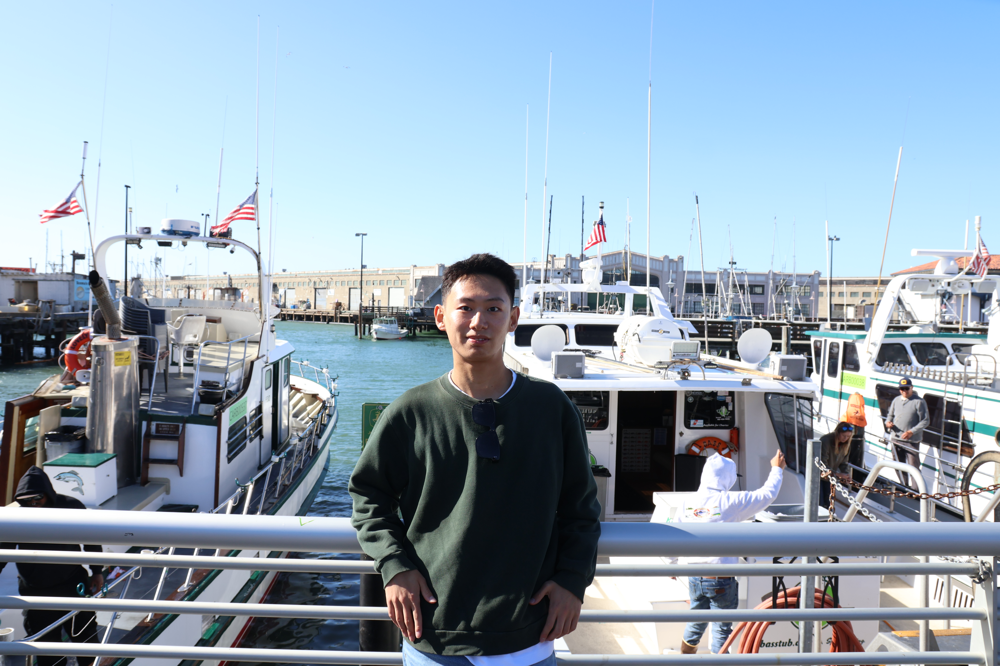

University of Michigan · CSE
Hi, I’m Runyu Lu.
I am a second-year PhD student in Computer Science and Engineering at the University of Michigan, co-advised by Professors Mosharaf Chowdhury and Ang Chen. I am also doing research in NVIDIA GEAR Lab. I am interested in Robotics(Embodied AI) and ML systems.

Research Overview
-
Robotics(Embodied AI)
I currently work on VLA post-training and physical agents. While today's LLMs, VLMs, and AI agents excel at reasoning and diverse virtual tasks, my focus is on extending that intelligence into the physical world. I'm excited to learn and contribute to bridging virtual insight with embodied autonomy.
-
ML System
I am interested in many aspects of ML systems. I worked on DiT-based Image Generation, Multimodal Model Training, GPU Sharing for LLM Serving, and LLM-enabled Compiler Fuzzing.
Publications
-
TetriServe: Efficient DiT Serving for Heterogeneous Image Generation
arXiv preprint arXiv:2510.01565, 2025
-
Cornstarch: Distributed Multimodal Training Must Be Multimodality-Aware
arXiv preprint arXiv:2503.11367, 2025
-
Whitefox: White-box compiler fuzzing empowered by large language models
Proceedings of the ACM on Programming Languages 8 (OOPSLA2), 709-735, 2024
-
MuxServe: Flexible Spatial-Temporal Multiplexing for Multiple LLM Serving
Forty-first International Conference on Machine Learning (ICML), 2024